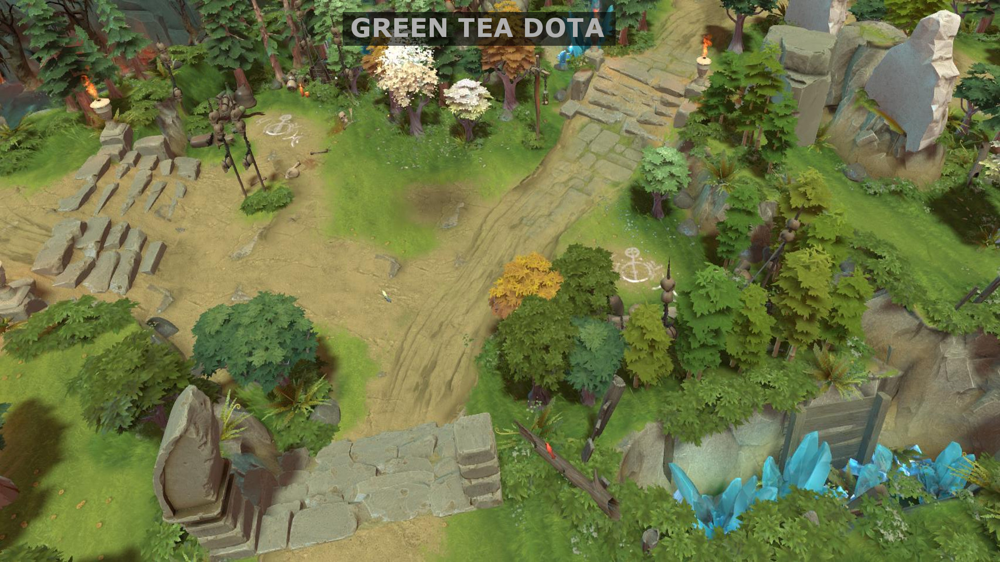

GENERAL CHANGES
Map Changes:
-
The Green Tea Dota map has been updated, see the screenshots below (move the sliders to compare the previous map with the current one).
Hermit Crab
-
Hermit Crab now grants half of the bounty to all other teammates of the killer (if the killer gets 200 gold, each teammate gets 100 gold).
Side Shop
-
Gold Ring, Mana Orb, Wild Talisman, Magic Tooth, and Healing Rag are now available at the side shop.
MAP CHANGES

ITEMS

Amplification Tome: NEW ITEM
- Cost: 1000
- Provides:
-
10% Spell Amplification
Eternity Staff: NEW ITEM
-
Runed Bracers (1000)
Amplification Tome (1000)
Recipe (750)
Total Cost: 2750
Provides:
12 Intelligence
12% Spell Amplification
Passive:
12% Spell Lifesteal
Lich's Mana Pendant: NEW ITEM
-
Paladin's Plate (1800)
Mana Orb (700)
Priest's Tunic (500)
Recipe (500)
Total Cost: 3500
Provides:
10 Armour
25% Magic Resistance
250 Mana
5 HP Regen
Passive:
Converts 25% of all damage taken (after reductions) into mana.
Midas Claw: NEW ITEM
-
Lucky Coin (500)
Sharp Dirk (500)
Gloves of Speed (450)
Total Cost: 1450
Provides:
+3 All Stats
20 Attack Speed
15 Damage
Passive: Grevious Greed
Killing a unit provides 2-3 bonus gold. Landing an attack on a hero grants 5 bonus gold.
Quarterlance: NEW ITEM
- Cost: 1150
- Provides:
-
15 Movement Speed
20 Attack Speed

Blessed Greatshield
- Cost reduced from 1100 to 1000.
- No longer gives 40 Mana.

Bloodgod Amulet
- Recipe cost increased from 650 to 900 (total cost increased from 2850 to 3100).
- No longer gives 2 Armour.
- Mana bonus reduced from 450 to 350.
- Intelligence bonus reduced from 12 to 10.
- Passive Reworked:
Old Passive: Provides 12% spell lifesteal (2.4% from creeps).
New Passive: Dealing spell damage applies the Heartbreak debuff to enemies, causing their healing received and regeneration to be reduced by 40% for 3 seconds.
Breaker of Nightmares
- Passive now gives 20 Health Regen instead of 75% amplification.
- Passive damage reduction reduced from 40% to 30%.
Caged Boots: REMOVED
- Removed from the game.
Cannibal Sword: RECIPE REWORKED
- Old Recipe:
-
Giant's Crystal (1200)
Thirsting Sword (1950)
Sharp Mace (1400)
Total Cost: 4550
Provided:
41 Damage
25 Strength
400 HP
11% Lifesteal
-
Thirsting Sword (1950)
Paladin's Plate (1800)
Total Cost: 3750
Provides:
25 Damage
10 Armour
4 HP Regen 11% Lifesteal
Active Unchanged
Crescent's Flame
- Strength reduced from 12 to 10.

Crusader's Mail
- No longer gives 1 HP regeneration.
Delicate Longbow
- Cost reduced from 1100 to 1000.
- No longer gives 1 HP regeneration.
Demon Greataxe
- No longer gives 50 Mana.
Extractinator: RECIPE REWORKED
- Old Recipe:
-
Fury's Gauntlet (1900)
Frozen Demonblood (825)
Total Cost: 2725
Provided:
15 Damage
55 Attack Speed
9 HP Regen
-
Giant's Crystal (1200)
Frozen Demonblood (825)
Recipe (500)
Total Cost: 2525
Provides:
350 HP
9 HP Regen
Active Unchanged

Frozen Demonblood
- No longer gives 3 damage.
Giant's Crystal
- Health bonus reduced from 400 to 300.

Giant's Cuirass
- Cost reduced from 3000 to 2800.
- No longer gives 60 Mana.

Glare of Anubis: PASSIVE REWORKED
- Old Passive: Your attacks have a 50% chance to deal 40 bonus physical damage.
- New Passive: Landing an attack grants you 7 attack speed for 5 seconds. Stacks with itself, up to 6 times.
- No longer gives 2 HP regeneration.
Haemoturgist's Garb
- No longer gives 8 Armour.

Hydra's Thirst: RECIPE REWORKED
- Old Recipe:
-
Windrush (3000)
Diffusion Stone (1325)
Sharp Dirk (500)
Total Cost: 4825
Provided:
20 Damage
30 Agility
3 Mana Regen
25 Attack Speed
-
Windrush (2800)
Diffusion Stone (1325)
Quarterlance (1150)
Total Cost: 5275
Provides:
35 Agility
3 Mana Regen
30 Attack Speed
20 Movement Speed
Infernalis: RECIPE REWORKED
- Old Recipe:
-
Orb of Pyros (1250)
Elven Hood (350)
Sharp Dirk (500)
Recipe (1000)
Total Cost: 3100
Provided:
200 Health
9 Intelligence
6 Agility
15 Damage
Passive:
AoE Damage: 30
-
Fury's Gauntlet (1900)
Giant's Crystal (1200)
Recipe (1000)
Total Cost: 4100
Provides:
400 Health
60 Attack Speed
Passive:
AoE Damage: 40

Ironside Dancer
- No longer gives 2.5 HP regeneration.
Loyal's Paw: RECIPE REWORKED
- Old Recipe:
-
Delicate Longbow (1000)
Reinforced Gauntlet (350)
Life Orb (800)
Elven Hood (350)
Total Cost: 2600
Provided:
20 Agility
10 Strength
400 Health
-
Magic Tooth (300)
Magic Tooth (300)
Gloves of Speed (450)
Recipe (300)
Total Cost: 1350
Provides:
25 Attack Speed
2 Mana Regen
Active Unchanged

Mage's Skull
- Mana bonus reduced from 300 to 250.

Magus King Hood
- Cost reduced from 3000 to 2800.
- No longer gives 3 Armour.

Maiden Tears
- No longer give 5 movement speed.

Momentum Boots
- Mana bonus reduced from 300 to 250.

Murder of the Crows: RECIPE REWORKED
- Old Recipe:
-
Reinforced Gauntlet (350)
Healing Rag (300)
Gloves of Speed (450)
Recipe (800)
Total Cost: 1900
-
Reinforced Gauntlet (350)
Healing Rag (300)
Quarterlance (1150)
Total Cost: 1800
Stats Unchanged

Norstark Fist
- No longer built from Gold Ring (cost reduced by 170, now 3000 total).
- No longer gives 5 Agility and 5 Intelligence
Paladin's Plate
- No longer gives 8 damage block.

Priest's Headdress: REMOVED
- Removed from the game.

Runed Bracers
- Cost reduced from 1100 to 1000.
- No longer gives 1 Armour.
Sharp Mace
- Damage reduced from 20 to 14.
- Strength reduced from 12 to 10.

Snake Pendant
- No longer gives 100 Mana.

Ten Tonne Hammer Gloves
- Strength reduced from 28 to 26.
- No longer gives Agility or Intelligence

Thickblooded Ale
- Strength bonus increased from 12 to 14.
- Armor bonus increased from 2 to 4.

Veil of the Night: RECIPE REWORKED
- Old Recipe:
-
Fury's Gauntlett (1900)
Maiden's Tears (825)
Recipe (250)
Total Cost: 2725
Provided:
50 Attack Speed
250 Night Vision
2.5 Mana Regen
10 Movement Speed
Passive: Moonlight Aura
Provides a 1200 radius aura that gives allies 20% increased healing from all sources.
-
Mage's Skull (1200)
Maiden's Tears (825)
Recipe (250)
Total Cost: 2275
Provides:
250 Mana
3.5 Mana Regen
250 Night Vision
3% Movement Speed
Passive: Moonlight Aura
Provides a 1200 radius aura that gives allies 20% increased healing from all sources.
Vanguard Aegis:
- Replaced Resonance Bell.
- Strength Bonus increased from 25 to 30.
- Health regen reduced from 8 to 6.
- No longer gives 150 Mana.
- Passive: Unyielding
The wielder gets an additional 5 maximum Health per point of Strength.

Vendetta's Grasp: ITEM REWORKED
- Old Vendetta's Grasp:
-
Recipe:
Giant's Crystal (1200) Mage's Skull (1200) Gamma (1900) Total Cost: 4300
Provided:
400 Health
400 Mana
8 Mana Regen 18 Intelligence
8% Movement Speed
8% Spell Amplification
Active: Shoots a projectile which silences the target for 4 seconds and reduces their damage by 50%.
Passive: Deals 25 bonus pure damage on attack.
-
Recipe:
Mage's Skull (1200) Quarterlance (1150) Runed Bracer (1000)
Total Cost: 3350
Provides:
300 Mana
3 Mana Regen
10 Intelligence
25 Movement Speed
30 Attack Speed
Active: Shoots a projectile which silences the target for 5 seconds and reduces their movement speed by 20%. All attacks on the silenced target deal 15% bonus damage as pure.
Passive: No longer has a passive.

Windrush
- Cost reduced from 3000 to 2800.
- No longer gives 2 HP regen.
HEROES

Ancient Rose:
- Stranglethorn cooldown increased from 60 to 75.
Apostate:
- Blasphemy Max Health as stack Threshold reduced from 4% to 3.5%.

Armordillo: NEW ULTIMATE
- New Ultimate: Frenzying Rage replaced with Macebreaker
- Macebreaker:
Strikes in a long line with a devastating thrust that deals pure damage and reduces opponents damage.
Distance: 700 Damage: 100/150/200 Damage Reduction: 50/60/70% Debuff Duration: 6 Cooldown: 75
Mana Cost: 100/150/200 - Reinforce armour change reduced from 5/6/7/8 to 5.
- Reinforce damage increased from 50/100/150/200 to 80/140/200/260.
- Reinforce cast range increased from 400 to 450.
- Reinforce now targets 2/3/4/5 units - On cast, searches (300 radius) for up to 1/2/3/4 closest enemies next to the spell's main target and sends a projectile to each of them (buff applied on Armordillo still increases defense by 5, regardless of the amount of enemies hit).
- Raging Taunt attack speed reduced from 100/110/120/130 to 100.
- Rapier Expertise movement speed bonus per stack increased from 3% to 3/4/5/6%.

Basilisk:
- Base Agility reduced by 5.
- Base damage increased by 5.
- Expel Acid now hits only the closest 3 units, prioritizing heroes, instead of hitting every unit in the AoE.

Carna: NEW ULTIMATE
- New Ability: Grand Feast replaced with Hemorrhage
- Hemorrhage:
Causes Carna to emit gas and blood around him, dealing damage per second to nearby enemies. Can be cast while stunned.
Magical Damage: 40/60/80 +3% of Max Health Radius: 350 Duration: 6 Cooldown: 60/55/50
Mana Cost: 120 - Consume cooldown reduced from 5 to 4.
Cursed Wolf:
- Healing Glyph missing health as healing per second reduced from 5.5/7/8.5/10% to 5/6/7/8%.

Dark Queen:
- Bladestorm duration rescaled from 5/6/7/8 to 6.
- Bladestorm mana cost increased from 75 to 100.
- Dark Wall damage per second reduced from 100/150/200/250 to 40/80/120/160.
- Dark Wall mana cost rescaled from 140 to 50/80/110/140.
- Dark Wall cooldown time reduced from 30/26/22/18 to 22/19/16/13.
- Casting Dark Wall on top of an enemy will now always put them on Dark Queen's side of the wall. (Previously, they would get placed at the side they're closer to).
- Dark Wall's duration rescaled from 4/6/8/10 to 6/7/8/9.
- Hidden Insight Vision reduced from 600/1000/1400 to 600/900/1200.

Eldritch:
- End Of All That Is cooldown increased from 100 to 110.
Ethereal Lancer:
- Strength gain increased from 1.5 to 1.8.

Great Ent:
- Vine Grip no longer instantly heals the target.
- Vine Grip mana cost reduced from 150/140/130/120 to 140/130/120/110.
- Vine Grip now causes all enemies in a 225 radius around the target to get rooted for 0.4/0.8/1.2/1.6 seconds.
Kazak:
- Agility gain increased from 1.9 to 2.2.

Kingseeker: NEW ABILITY
- New Ability: Anticipation replaced with Shadowbeasts
- Shadowbeasts:
Summons 2 Shadowbeasts - Melee units under Kingseeker's control. On death or expiring, a Shadowbeast heals all nearby allies.
Attack Damage: 18 Health: 200 Movement Speed: 350 Duration: 25 Heal: 80/100/120/140 Heal Radius: 400 Cooldown: 40/36/32/28
Mana Cost: 75 - Base armor reduced by 1 (armour at level 1 from 2.4 to 1.4).
- Shadow Monarch cooldown increased from 60 to 75.

Kron:
- Intelligence increased from 16 + 1.3 to 17 + 1.8.
- Shield Charge range increased from 700 to 750.
- Whenever Powerful Roar hits at least one enemy, its cooldown is reduced by 1.5 seconds for 8 seconds. Stacks up to 2 times.
Lucifer:
- Reworked Ultimate: Number of the Beast
- Strength increased from 20 + 2.6 to 22 + 2.9.
Old Ability: Curses the target, causing lucifer to gain attack speed, damage, and slow on-hit while attacking the target.
New Ability: Lucifer tries sending target enemy hero to hell, dealing pure damage relative to the target's maximum health, while healing himself for a percentage of his own health. Then, applies a debuff which slows the target's attack speed. If it dies during it, the spell casts again on the closest enemy hero.
Duration: 4/5/6
Max HP as Damage/Healing: 18/20/22%
Attack Speed Slow: 75
Recast Search Radius: 600
Manacost: 150
Cooldown: 66.6

Mana Eater:
- Agility increased from 12 + 1.6 to 18 + 2.
- Base intelligence increased from 22 to 23.
- Sear Health and Scorch Mana can now target creeps.
- Shred Wits now always damages and stuns creeps, instead of doing neither.

Merchant:
- Base strength increased from 16 to 18.

Nahl: NEW ABILITIES
- New Ultimate: Frostbite replaced with Glacial Orb
- Reworked Ability: Creeping Cold
- Base Strength reduced from 20 to 18.
- Base movement speed reduced from 300 to 290.
- Precarious Icicle manacost increased from 125 to 135.
- Shattershot travel range reduced from 1000 to 850.
- Shattershot bonus damage to the main target increased from 50 to 75.
Glacial Orb:
An auto attack modifier which causes your attacks to deal bonus magic damage around the target.
Radius: 175 Damage: 60/90/120
Mana Cost: 45
Old Ability: Whenever you cast a spell, damages and slows enemies around you.
New Ability: Whenever you deal damage with a spell, the target is slowed.
Movement Slow: 8/12/16/20%
Attack Speed Slow: 8/12/16/20
Slow Duration: 4.

Nerub:
- Spin Web movement speed slow reduced from 15/20/25/30% to 12/16/20/24%.
- Anub'arak's Curse duration reduced from 3/4/5 to 3/3.5/4.

Okita:
- Strength gain increased from 2.2 to 2.5.
- Agility gain increased from 2.7 to 2.8.

Plague Lord:
- Projectile speed increased from 800 to 900.
Proxima Centauri:
- Starfall manacost increased from 160 to 170.
- Moment of Respite no longer increases health regen while hidden. Now instead causes nearby enemies to get stunned for 0.6/1.2/1.8/2.4 seconds after the duration.
- Moment of Respite duration increased from 2.4 to 3.2 seconds.

Robot Scientist:
- Base movement speed reduced from 295 to 290.
- Full Missile Jacket search range reduced from 1600 to 1400.

Shaman: NEW ABILITY
- New Ability: AttackSpeed Totem replaced with Chaos Totem
- Chaos Totem:
Places a totem which connects to nearby heroes with beams, prioritizing allies. Breaking a beam will cause the totem to find a new target. Connected allies gain damage and attack speed, while connected enemies take damage per second.
Connected Heroes: 2/3/4 Beam Reach: 700 Damage Buff: 60/70/80 Attack Speed Buff: 70/80/90 Damage per second: 80/140/200 Hero Attacks to Destroy Totem: 3/5/7
Totem Duration: 30
Cooldown: 100/90/80
Mana Cost: 100/150/200 - Base damage reduced by 6.


Shifter:
- Whenever Shadow Walker finds the new furthest unit, it won't change to a new one for at least 1 second.

Trickster:
- Inverse Bolt damage increased from 80/130/180/230 to 85/140/195/250.
Vampire Mistress:
- Base strength increased from 18 to 20.

Valkyrie:
- Soaring Fury cooldown reduced from 70 to 70/60/50.